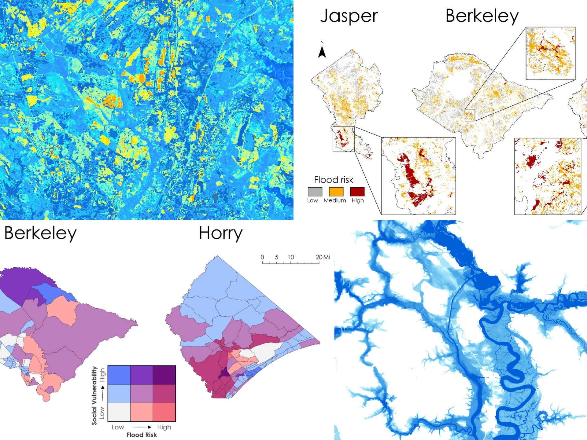
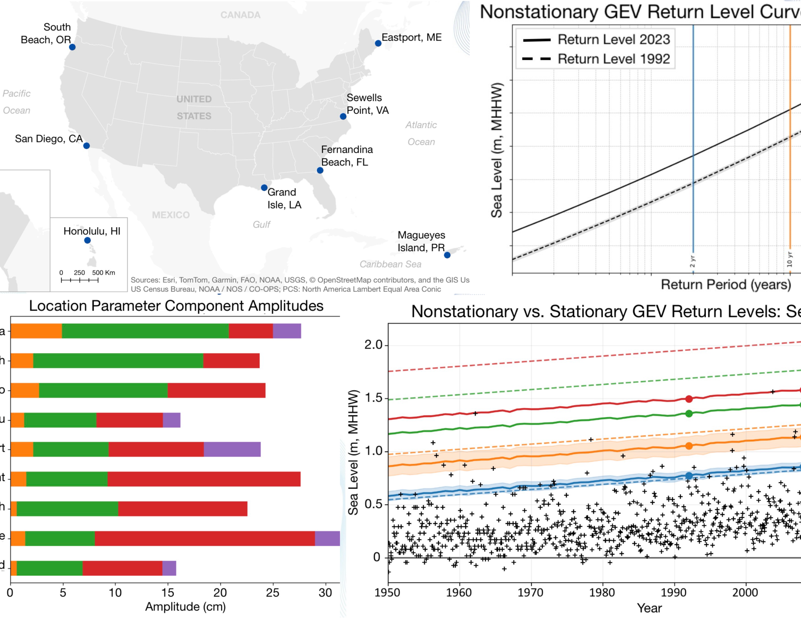
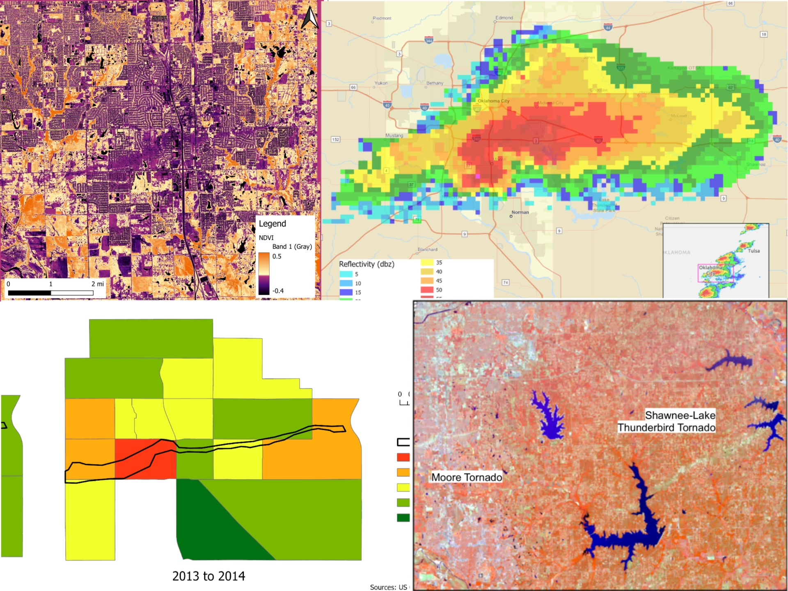
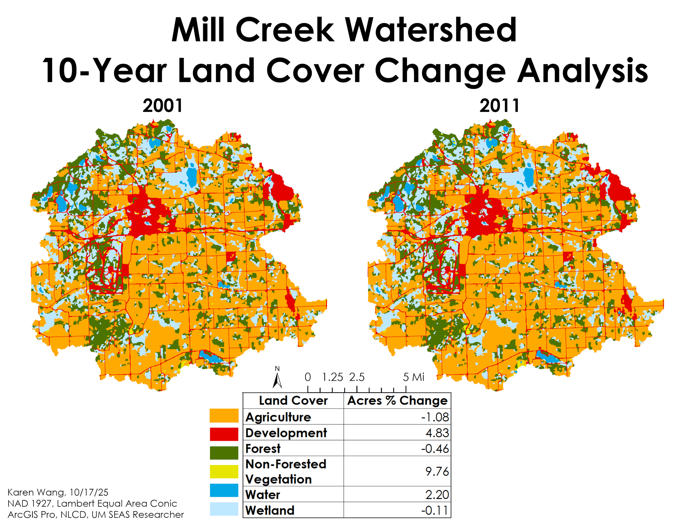
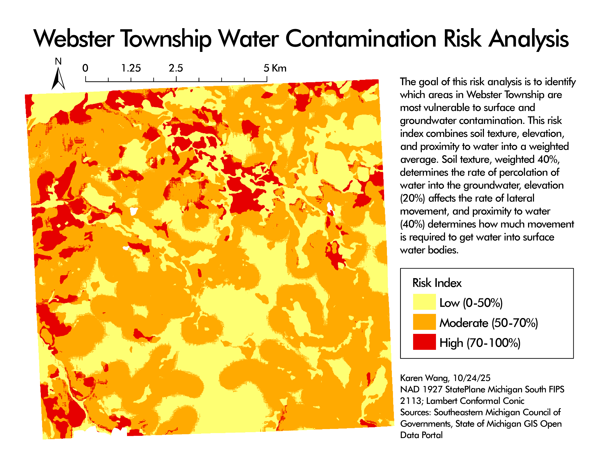
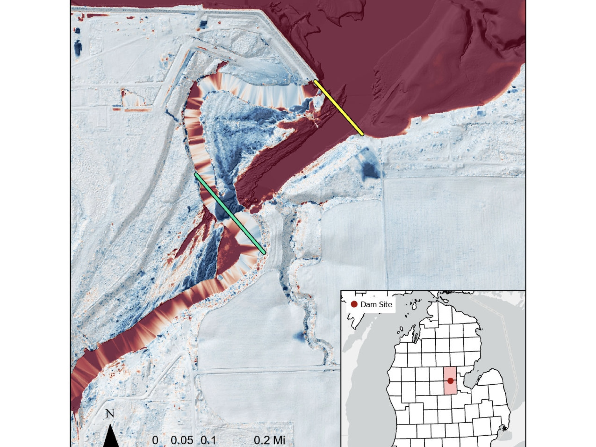
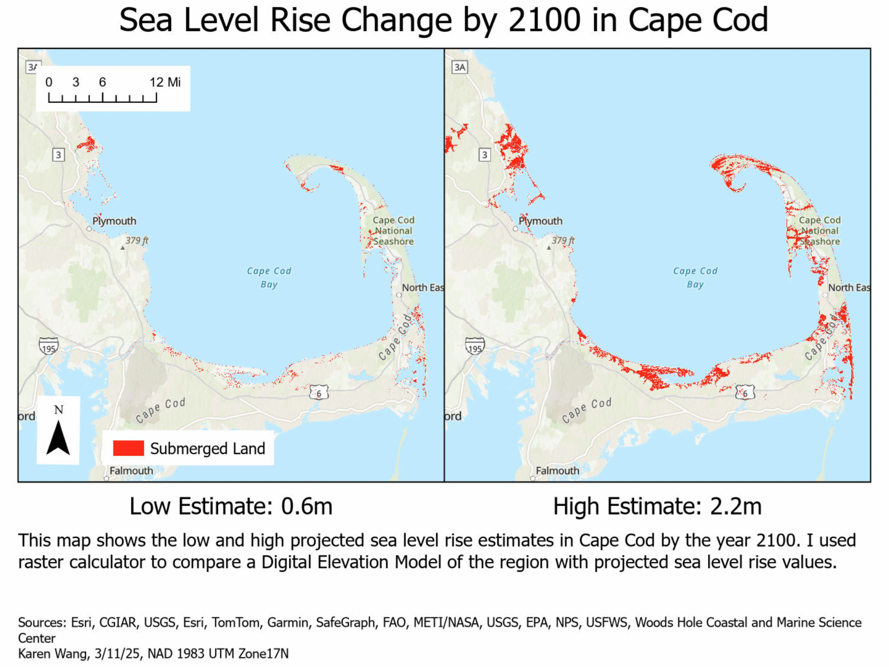
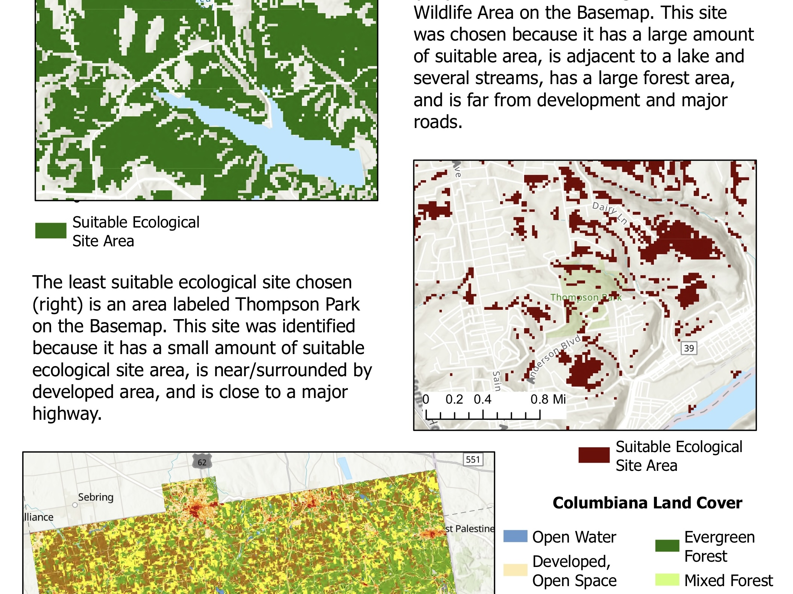
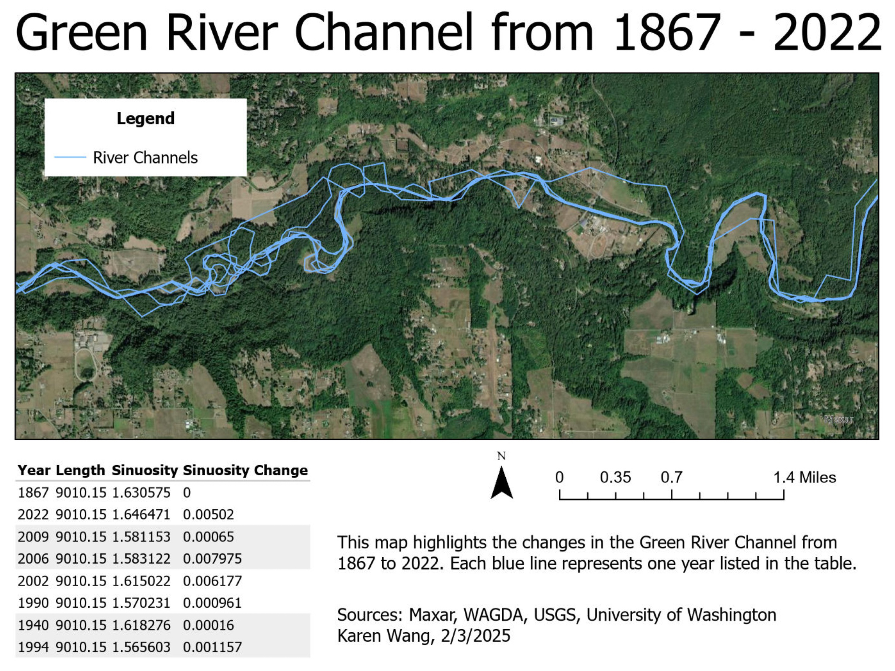

NASA DEVELOP Project: South Carolina Water Resources
Mapping isolated wetlands, flood risk, and social vulnerability across three South Carolina counties.
View projectPortfolio
A collection of technical and research projects I’ve created or contributed to throughout my academic career, highlighting skills in data analysis, programming, visualization, spatial analysis, and scientific communication. Select a project to explore its methods, maps, and deliverables.

Mapping isolated wetlands, flood risk, and social vulnerability across three South Carolina counties.
View project
Comparing stationary and nonstationary extreme value models of coastal water levels at nine U.S. stations.
View project
Satellite imagery, radar, and census analysis of the 2013 EF5 tornado in Moore, Oklahoma.
View project
Land cover change between 2001 and 2011 across the watershed, with acreage and percent change.
View project
A weighted raster overlay identifying low, moderate, and high water contamination risk.
View project
LiDAR-derived elevation change showing erosion and sedimentation after the 2020 dam failure.
View project
Low and high sea level rise scenarios for Cape Cod modeled from a digital elevation model.
View project
Map algebra and ModelBuilder analysis of ecological site suitability in Ohio.
View project
Digitized historic river channels tracking length and sinuosity change over more than 150 years.
View project